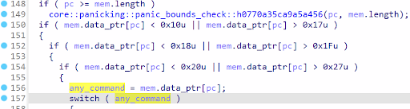

niteCTF полу-writeup
VM⌗
Дан код виртуалки на расте и какой-то выхлоп из неё. Ищем main, листаем и видим что начинается какой-то подозрительный фрагмент с if’ами. Понимаем что это что-то связанное с выхолпом, берётся указатель pc и по указателю берётся hex число
 (пройдем в switch только если число меньше всех трёх проверок или большё всех трёх проверок)
Ну и короче в файле он берёт число и проверяет через всё это. Если проходит если не попадаем в первый if то идём else там чето делается. Если проходит только первый , а второй нет, то идём в else второго там тоже какая-то залупа делается. Такая же ситуация с третьим else. Тоже чето делается и всё такое. Если попадаем во все if то далее идём в свич.
Сразу обозначу что в нём у нас делается:
OUTPUT: можно понять по присутствующим функциям printINPUT: можно понять по readNOP: функция, которая ничего не делает. Можно понять по ничего не деланью внутри функцииMOV: не помнюNOTAND: вроде как раз в этой фигне у нас меняется код и всё такое. В общем можно понять по тому что там изменяется по указателю значение.CMP: сравнение двух чисел. И если равны то там ставится что cflag=1LEFTSHIFT: не помнюRIGHTSHIFT: не помнюJNE: переход, если не равно.
Вроде на этом всё. Ну и вобщем таким образом можно понять что это что-то типа ассемблера.
Дальше мы решили написать дизассемблер, который байты перевел бы в читаемый код на псевдо-ассемблере.
Посмотрев врайтап на таск мы поняли что были очень близки к решению таска нужно было переводить байты не в псевдо-код а в питоновский код на z3 ;D
Получилось что-то вроде такого
#!/usr/bin/env python3
import sys
from enum import Enum
class COMMAND(Enum):
INPUT = 0x81
OUTPUT = 0x80
NOP = 0x90
MOV = 0x30
NOTAND = 0x31
CMP = 0x32
LSHIFT = 0x40
RSHIFT = 0x41
JNE = 0x50
if __name__ == '__main__':
filename = sys.argv[1]
file = open(filename, 'rb')
code = file.read()
file.close()
FLAG = 0
f = open(f"{filename}.dis", 'w')
pc = 0
count = 0
while (pc < len(code)):
print(pc, "/", len(code))
print(hex(code[pc]))
if (code[pc] == COMMAND.INPUT.value):
print("INPUT")
count += 1
pc += 3
f.write(f"input {hex(code[pc+1])}{hex(code[pc+2])[2:]}\n")
elif (code[pc] == COMMAND.OUTPUT.value):
print("OUTPUT")
count += 1
pc += 3
f.write(f"output {hex(code[pc+1])}{hex(code[pc+2])[2:]}\n")
elif (code[pc] == COMMAND.NOP.value):
print("NOP")
count += 1
pc += 1
f.write(f"nop\n")
elif (code[pc] == COMMAND.MOV.value):
print("MOV")
count += 1
pc += 2
f.write(f"mov [r]{hex(code[pc+1] >> 4)}, [r]{hex(code[pc+1] & 0xf)}\n")
elif (code[pc] == COMMAND.NOTAND.value):
print("NOTAND")
count += 1
pc += 2
f.write(f"notand [r]{hex(code[pc+1] >> 4)}, [r]{hex(code[pc+1] & 0xf)}\n")
elif (code[pc] == COMMAND.CMP.value):
print("CMP")
count += 1
pc += 2
f.write(f"cmp [r]{hex(code[pc+1] >> 4)}, [r]{hex(code[pc+1] & 0xf)}\n")
elif (code[pc] == COMMAND.LSHIFT.value):
print("LSHIFT")
count += 1
pc += 2
f.write(f"lsh [r]{hex(code[pc+1] >> 4)}, [r]{hex(code[pc+1] & 0xf)}\n")
elif (code[pc] == COMMAND.RSHIFT.value):
print("RSHIFT")
count += 1
pc += 2
f.write(f"rsh [r]{hex(code[pc+1] >> 4)}, [r]{hex(code[pc+1] & 0xf)}\n")
elif (code[pc] == COMMAND.JNE.value):
print("JNE")
count += 1
pc += 3
f.write(f"jne {hex(code[pc+1])}{hex(code[pc+2])[2:]}\n")
elif (code[pc] in range(0x18, 0x1f+1)):
print("MOVRMEM2") # ops: command(first 8 bit), 2 byte
count += 1
pc += 3
f.write(f"mov [r]{hex(code[pc+1])}, [m]{hex(code[pc+2])}\n")
elif (code[pc] in range(0x10, 0x17+1)):
print("MOVRMEM1") # ops: command(first 8 bit), 1 byte
count += 1
pc += 2
f.write(f"mov [r]{hex(code[pc] & 0xf)}, [m]{hex(code[pc+1])}\n")
elif (code[pc] in range(0x20, 0x27+1)):
print("MOVMEMR2") # ops: 2 byte, command(first 8 bit)
count += 1
pc += 3
f.write(f"mov [m]{hex(code[pc+1])}{hex(code[pc+2])[2:]}, [r]{hex(code[pc] & 0xf)}\n")
elif (code[pc] == 0xc0):
pc += 2
f.write("db 0xc0 0x00\n")
#import IPython; IPython.embed()
continue
else:
print(count)
print("[Error] invalid opcode:", hex(code[pc]))
exit(0)
В итоге кода много, в итоге сложна сложна а время было позднее и мы ушли спать.